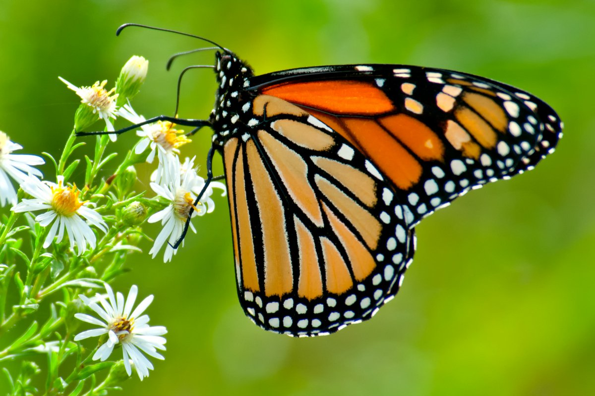

Butterfly Life Cycle
As soon as the butterfly has rested after coming out of the chrysalis, it will pump blood into the wings in order to get them working and flapping – then they get to fly. Usually within a three or four-hour period, the butterfly will master flying and will search for a mate in order to reproduce.
When in the fourth and final stage of their lives, adult butterflies are constantly on the look out to reproduce and when a female lays their eggs on some leaves, the butterfly life cycle will start all over.

Finally, when the caterpillar has done all of its forming and changing inside the pupa, if you are lucky, you will get to see an adult butterfly emerge. When the butterfly first emerges from the chrysalis, both of the wings are going to be soft and folded against its body. This is because the butterfly had to fit all its new parts inside of the pupa.
The pupa stage is one of the coolest stages of a butterfly’s life. As soon as a caterpillar is done growing and they have reached their full length/weight, they form themselves into a pupa, also known as a chrysalis. From the outside of the pupa, it looks as if the caterpillar may just be resting, but the inside is where all of the action is. Inside of the pupa, the caterpillar is rapidly changing.

When the egg finally hatches, most of you would expect for a butterfly to emerge, right? Well, not exactly. In the butterfly’s life cycle, there are four stages and this is only the second stage. Butterfly larvae are actually what we call caterpillars. Caterpillars do not stay in this stage for very long and mostly, in this stage all they do is eat.
When the egg hatches, the caterpillar will start his work and eat the leaf they were born onto. This is really important because the mother butterfly needs to lay her eggs on the type of leaf the caterpillar will eat – each caterpillar type likes only certain types of leaves. Since they are tiny and can not travel to a new plant, the caterpillar needs to hatch on the kind of leaf it wants to eat.
A butterfly starts life as a very small, round, oval or cylindrical egg. The coolest thing about butterfly eggs, especially monarch butterfly eggs, is that if you look close enough you can actually see the tiny caterpillar growing inside of it. Some butterfly eggs may be round, some oval and some may be ribbed while others may have other features. The egg shape depends on the type of butterfly that laid the egg.